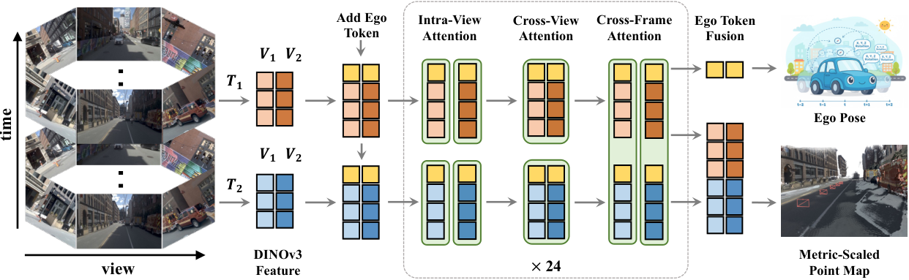
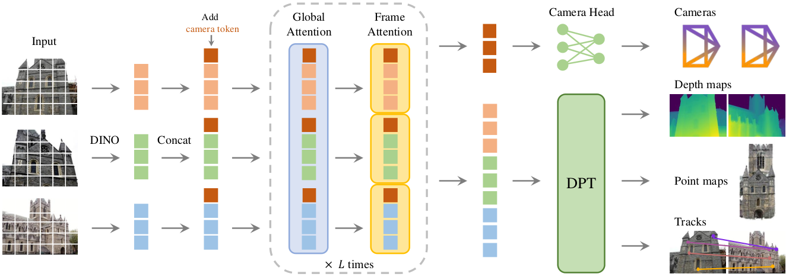
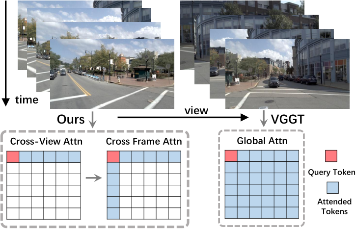
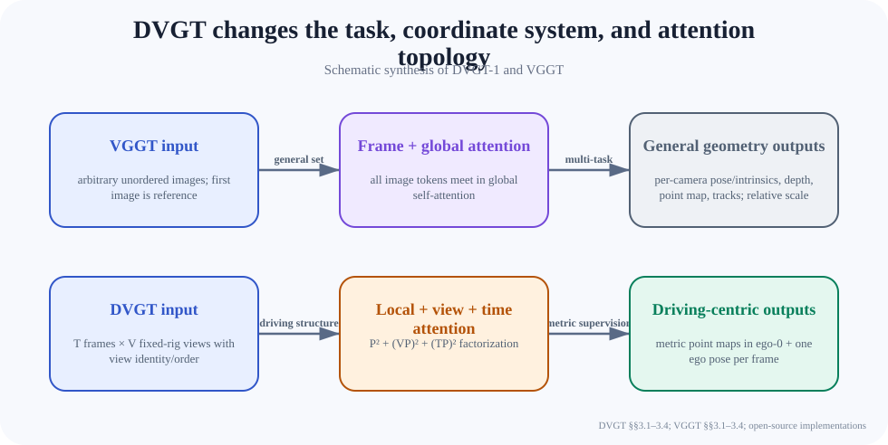
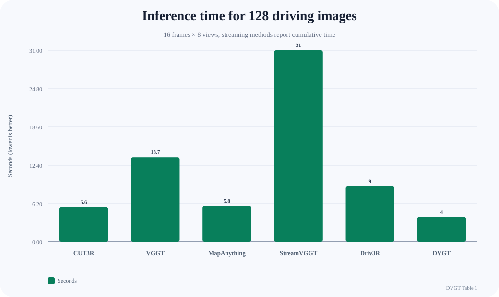
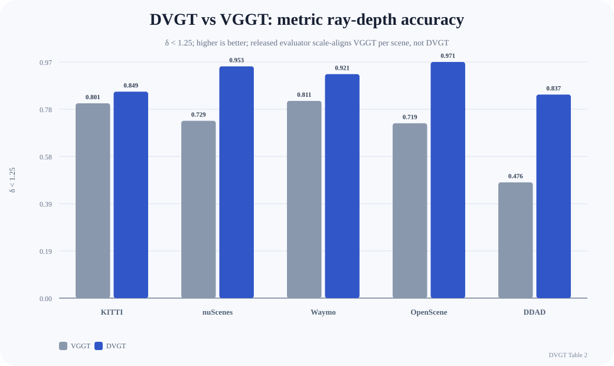
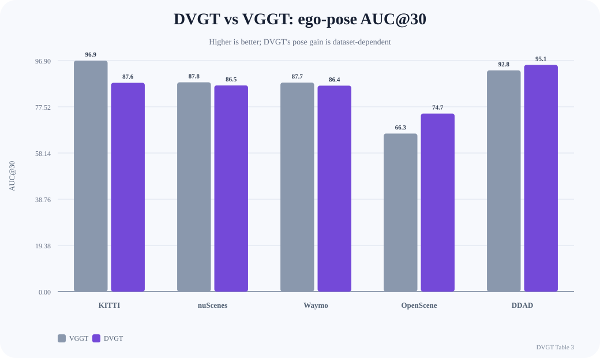
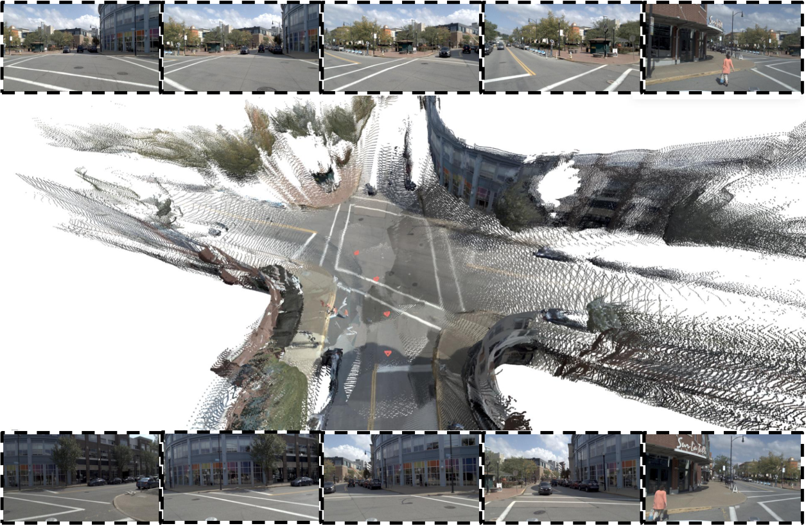
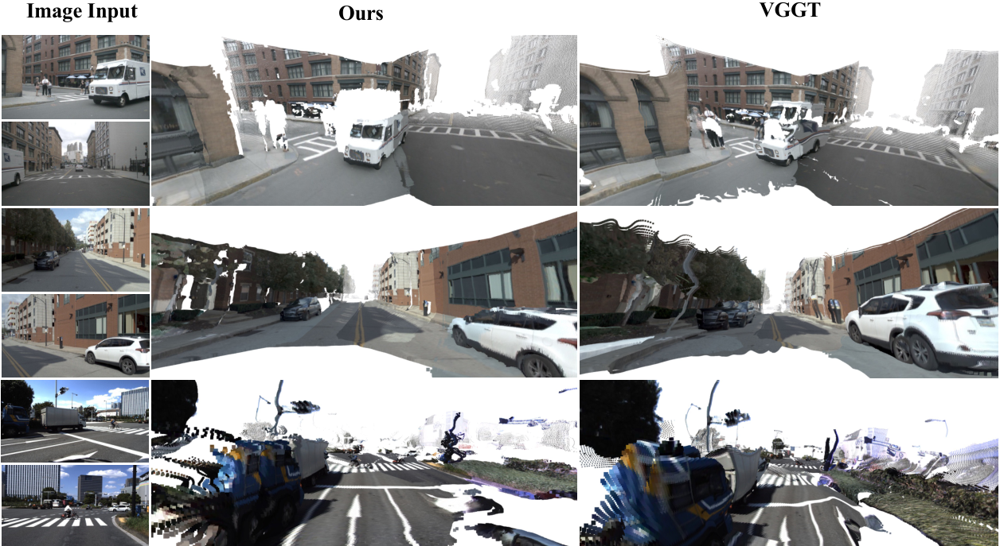

核心结论
关键证据
1. DVGT-1 在解决什么问题
它把“通用多视图重建”重新定义成“驾驶序列的统一 ego-centric metric geometry”。
给定 T 帧、每帧 V 个未提供相机参数的环视图像，DVGT 联合预测每幅图的 pixel-aligned 3D point map P[t,v,H,W,3] 和每帧到首帧的 ego pose T[t]。所有点直接表达在首帧 ego-vehicle 坐标中，并带 metric scale。
这里的“global dense point map”并不是一个去重融合后的 mesh/occupancy，也不是补全不可见空间；代码实际输出每个输入像素对应的 3D 点。将 T×V 个 point maps 放到同一 ego-0 坐标后即可聚合可见表面，因此它是 dense visible geometry，而非完整世界模型。
选择 ego 而不是 camera-0 坐标很契合固定车载 rig：不同相机共同描述同一车辆坐标，每帧只需一个 ego pose；代价是它不再像 VGGT 那样显式恢复每个相机的 intrinsics/extrinsics。
DVGT 与 VGGT 的原始系统图
左图是 DVGT 的驾驶时空结构；右图是 VGGT 的通用图像集合结构。


2. 真正的架构差异：利用驾驶输入的可分解结构
VGGT 把所有图像放进 global attention；DVGT 将信息交换限制在有明确语义的三个轴上。
每个 DVGT block 顺序执行：单图内部的 Intra-View Local Attention；同一时刻不同相机间的 Cross-View Spatial Attention；同一相机槽位跨时间的 Cross-Frame Temporal Attention。代码中的 reshape 分别是 (BTV,P,C)、(BT,VP,C) 和 (BV,TP,C)。
若每图 P 个 token，VGGT global attention 近似处理 (T·V·P)^2；DVGT 将其拆成 T·V·P² + T·(V·P)² + V·(T·P)²。它仍然在 view/time 轴上二次增长，但避免了 view×time 的联合全局序列，因此 128 图推理明显更快。
这种效率不是免费午餐。论文 Table 6 中 L+G 的几何指标优于 factorized L+S+T+TE，但耗时约 8.2s vs 4.0s；Temporal Embedding 主要补回 pose 与部分几何性能。


3. 输出头与坐标系：camera token 被改造成 ego token
DVGT 对驾驶 rig 做了任务级简化，而不只是换一个 attention block。
VGGT 为每张图输出 9D camera 参数（quaternion、translation、FoV），并有 depth、point map、track heads；point maps 定义在第一相机坐标，输入除第一张外基本 permutation-equivariant。DVGT 不预测 intrinsics/FoV，也不保留 depth/track head，只输出 metric point map confidence 与每帧一个 7D ego pose。
代码先为每个 view 放 ego token，再在同一 frame 上对 V 个 ego tokens 做 mean pooling，经过四轮 iterative refinement 输出 translation + quaternion。论文公式写的是 sum pooling；由于随后有 LayerNorm，sum/mean 的常数尺度多数会被抵消，但这仍是文字与实现的细节差异。
DVGT 的 cross-frame attention 按固定 view index 分组，因此它擅长相机槽位在时间上稳定的车载 rig。论文所说“arbitrary camera configurations”更准确地理解为可在不同车辆/数据集的 rig 间统一训练和推理，而非支持序列内部任意移动、掉线或不断变化的相机集合。
4. Metric scale 从哪里来：推理 prior-free，训练并非 geometry-free
不输入 calibration 与不使用几何监督是两回事。
DVGT 推理时不接收 intrinsics/extrinsics，也不做 2D→3D projection；但训练 GT 使用真实 ego pose 和 camera calibration 将每图点转换到 ego-0，并用稀疏 LiDAR 把 MoGe-2 monocular depth 对齐到 metric scale。作者还用 valid overlap、AbsRel、δ<1.25、LiDAR 密度/空间方差、scale/shift 范围过滤约 15–20% 低质量样本。
坐标范围超过 100m 会让回归不稳定。论文和配置都采用 10× linear scaling：dataset 将 point/translation 乘 gt_scale_factor=0.1，evaluation 再除回 0.1。Table 5 显示 10× 优于无缩放、100× 和 arcsinh。
训练混合 nuScenes:KITTI:OpenScene:Waymo:DDAD = 6:5:77:6:6，OpenScene 占绝对多数。作者自己指出 Waymo 虽数据更大却只给同等权重，导致 Waymo 几何结果不够强。这说明所谓跨 rig generalization 主要是大规模 mixed-domain supervised training 的结果，并非结构保证。
避免误读 prior-free
5. 训练与初始化：DVGT 实际站在 VGGT 权重上
开源配置揭示了论文正文没有强调的初始化路径。
configs/train/dvgt1/default.yaml 从 ckpt/VGGT-1B/model.safetensors 加载权重。custom_load_state_dict() 将 VGGT camera token 复制为 ego token，把 frame blocks 重命名为 intra-view blocks，并把 global blocks 同时复制到 cross-view 与 cross-frame blocks；register tokens 也继承，DPT decoder/heads 刻意从头学习。
因此 DVGT 更准确的训练叙事是：以 VGGT 几何 transformer prior 为初始化，换 DINOv3 ViT-L/patch16 驾驶编码器与三路 attention，使用 metric driving pseudo-GT 做 160K steps 大规模适配。它不是纯粹从 DINOv3 开始训练的全新 1.7B geometry model。
模型在 64 张 H20 上训练约 6 天；每 GPU 动态采样 2–8 views 和若干 frames，总计最多 48 images，输入长边 518，短边 crop 144–224。训练时启用 bfloat16、gradient checkpointing、QKNorm、LayerScale 0.01 和 gradient clip 1.0。
论文—配置差异
| 模块 | 代码 | 关键实现 |
|---|---|---|
| Overall model | models/architectures/dvgt1.py | DVGT1Aggregator + ego pose head + DPT point/conf head |
| Three-axis attention | backbones/dvgt1_aggregator.py | intra (BTV,P)；view (BT,VP)；time (BV,TP)，每层输出 concat 为 3C |
| Ego pose | heads/dvgt1_ego_pose_head.py | 同帧 views mean pooling；4 次 detached iterative refinement |
| Metric point map | heads/dpt_head.py | 第 4/11/17/23 层多尺度 DPT；3D + confidence，inv-log activation |
| Loss | losses/point_in_ego_first.py + absolute_ego_pose.py | point confidence/reg/normal-gradient + 5× absolute ego pose |
| Data | datasets/scene_dataset.py + default_dataset.yaml | transform to ego-first；0.1 scale；dynamic T/V/aspect；48 images/GPU |
| VGGT init | DVGT1.custom_load_state_dict | frame→intra；global→view/time；camera→ego；decoder reset |
6. 与 VGGT、CUT3R、StreamVGGT、MapAnything 的统一对比
这些方法看似都输出 point map，但设计目标并不相同。
| 方法 | 主要输入/执行 | 输出坐标与尺度 | 交互机制 | 最适合 | 核心限制 |
|---|---|---|---|---|---|
| VGGT | 任意图像集合；batch feed-forward | 第一 camera frame；通常相对尺度；camera/depth/point/track | frame + all-image global attention | 通用 SfM/MVS、相机恢复、tracking | 多图 global attention 昂贵；驾驶 metric 需对齐/微调 |
| DVGT-1 | T×V 固定 rig 序列；offline batch | 第一帧 ego；直接 metric；point + ego pose | intra-view + cross-view + cross-frame | 多环视驾驶 dense metric geometry | 1.7B/训练昂贵；非 streaming；不输出相机标定/track |
| CUT3R | 图像逐张流入 recurrent state | camera-0/相对尺度；公开 evaluator 做 Umeyama | stateful autoregressive update | 通用连续在线 reconstruction | 顺序依赖、累积误差；驾驶 metric 非原生 |
| StreamVGGT | 逐图 streaming VGGT | camera-0/相对尺度；evaluator 做 Umeyama | streaming memory/cache | 长视频在线几何 | 本表 128 图累计 31s；同样非 driving-metric task |
| MapAnything | 大量多视图，memory-efficient batch | 可直接 metric；camera+points | 通用 transformer inference | 通用 metric mapping | 驾驶域误差大；缺少专门时空 rig bias |
| Driv3R | 驾驶序列 recurrent reconstruction | 需 LiDAR alignment（论文表 *） | driving recurrent state | 驾驶多帧几何 | 速度与 metric scale 不如 DVGT；部分数据集仍更准 |

7. 结果怎么读：depth 明显领先，但 geometry 与 pose 并非全面碾压
论文最强的证据是 metric ray-depth；全局点云与 pose 的优势更依赖数据集。
Table 2 中 DVGT 的 ray-depth 在五个驾驶集上都优于 VGGT，尤其 nuScenes/OpenScene；公开 evaluator 对 VGGT/CUT3R/StreamVGGT 使用 per-scene Umeyama 对齐，而 DVGT 不需要。这个比较展示了原生 metric supervision 的价值，但也意味着 baseline 在评测时拿到了稀疏 GT scale alignment，实际部署差距只会更大。
Table 1 的 Accuracy/Completeness 没有全胜：KITTI completeness 上 MapAnything 1.014、VGGT 1.294，优于 DVGT 1.468；Waymo 上 VGGT 1.641/2.053 和 Driv3R 0.800/1.311，也优于 DVGT 1.714/2.216。DVGT 在 nuScenes、OpenScene、DDAD 最强，和其数据混合权重高度相关。
Pose Table 3 更不是全面领先：VGGT 在 KITTI/nuScenes/Waymo 的 AUC@30 更高，DVGT 只在 OpenScene/DDAD 更好。DVGT 的价值是以一个 ego-level head 同时获得足够好的 pose 和强 metric point map，而不是成为最强通用 pose estimator。
Depth 与 pose 的互补结论
只看 depth 会得出“DVGT 全胜”，加入 pose 后能看到更真实的 trade-off。


8. 定性证据：驾驶数据与 metric 标签比单一架构更重要
DVGT 对道路、车道、车辆与行人的改善来自结构和训练分布共同作用。
论文 Figure 7 在 VGGT 已用 LiDAR GT 做后对齐的前提下比较 global point map。DVGT 对车道、树、车辆和行人更完整；这支持其 driving-specific geometry prior，但无法单独证明 factorized attention 是主要原因，因为 encoder、数据量、metric labels、坐标定义和 heads 全部同时改变。
DVGT 重建与 VGGT 直接对比
左为更多 DVGT reconstruction 示例，右为同场景 DVGT/VGGT 比较。


9. 动态场景能力的准确边界
DVGT 能重建动态对象，但它不是 canonical 4D scene model。
每个时间点的车辆/行人像素被预测到 ego-0 坐标，因此同一动态对象会在不同时间出现在不同 3D 位置。Cross-frame attention 有助于识别运动与静态背景，论文定性结果也显示动态对象优于 VGGT；但模型没有 object ID、trajectory head、scene flow 或 canonical time deformation。
所以 DVGT-1 的输出适合 ego-centric perception、depth、global visible geometry，以及给下游 planning 提供稠密空间特征；不适合直接当作可查询任意时间的 4D memory。仓库中的 DVGT-2 才进一步加入 causal/streaming training、m-RoPE、feature caching 与 trajectory planning，形成 Vision-Geometry-Action 路线。
10. 开源实现与复现成本
仓库的训练、评测、数据标注和 baseline wrapper 相当完整，但完整复现非常昂贵。
主环境为 Python 3.11、PyTorch 2.8/CUDA 12.8；需要额外 clone DINOv3，并下载 DINOv3、VGGT-1B 与 DVGT checkpoint。完整数据需要五个驾驶数据集、MoGe-2、稀疏 LiDAR 投影与对齐/过滤；官方建议 2 节点×8 GPU 做数据标注，训练使用 64 H20。
训练入口是 torchrun tools/train.py --config=train/dvgt1/default.yaml；统一 evaluator 提供 DVGT、VGGT、CUT3R、StreamVGGT、MapAnything wrappers。几何评测固定 16 frames，并在后处理中合并 scene-level metrics。仓库没有常规 first-party unit-test suite；本次对 39 个核心/对比文件按 GitHub tree size 校验并做 compileall，但未下载 1.7B checkpoint、完整数据或运行 GPU forward。
| 层级 | 需要的资源 | 可验证内容 |
|---|---|---|
| Inference demo | DVGT checkpoint + DINOv3 code/weights + 高显存 GPU | T×V → metric points / ego pose / viser visualization |
| Demo train/eval | 551MB demo dataset + 8 GPU 配置可缩减 | pipeline、loss、checkpoint 与 evaluator |
| 完整训练 | 5 datasets + MoGe-2/LiDAR annotations + 64 H20×6 days | 论文主模型 |
| 完整 baseline 表 | CUT3R/StreamVGGT/MapAnything 独立环境与 checkpoints | Table 1–3 的统一 wrapper 评测 |
11. 我的结论：DVGT 的核心是“驾驶任务重参数化”
它的优势不能简化成“比 VGGT 更好的 transformer”。
DVGT 把固定 rig、时间序列、ego coordinate 与 metric supervision 变成网络的一等公民。相较 VGGT，它牺牲通用相机恢复、输入集合的 permutation flexibility、depth/track 多任务和真正全局 token interaction，换取 driving-specific metric accuracy、吞吐与直接下游可用性。
若任务是任意照片的 SfM/MVS、相机内外参、tracking 或跨域单/少图几何，VGGT 更合适；若任务是 2–8 环视相机、连续驾驶帧、首帧 ego 坐标和 metric point cloud，DVGT 明显更贴合；若要求 online 长序列，则应该比较 DVGT-2、CUT3R、StreamVGGT，而不是把 DVGT-1 的 4s batch time当成 streaming latency。
- 最强贡献：任务定义、ego-centric metric output、混合驾驶数据与 factorized 时空交互的组合。
- 最容易被忽略：DVGT 继承 VGGT attention/token 权重，decoder 重学；论文没有突出这一初始化。
- 最需要谨慎：论文 α=2.0 与开源 default α=0.2 不一致；Pose 与 global point metrics 并非所有数据集都优于 VGGT/Driv3R。
- 后续方向：让 DVGT-2 的 streaming state 保持 DVGT-1 的 metric fidelity，并显式建模 object-centric 4D motion。
局限与开放问题
- 分析主体是 DVGT-1（CVPR 2026）；当前仓库同时包含 DVGT-2，但没有在本报告中全面复述 DVGT-2 论文与 planning benchmark。
- 没有下载 1.7B checkpoint 或五个完整数据集，未执行 GPU inference/training；代码结论来自 commit 51cf3f6d 的静态审计和配置映射。
- DVGT 与 VGGT 的论文训练数据、encoder、输出 heads、监督尺度和 attention 同时不同，现有消融不能把最终提升单独归因给 factorized attention。
- 所谓任意 camera configuration 是跨已训练 driving rigs 的经验泛化，不是几何上严格的 calibration equivariance。
- 动态对象被逐帧重建到 ego-0，但没有显式 4D identity/motion representation。
证据与推断边界
- 论文事实：任务定义、24×3 attention、1.7B、64 H20×6 days、五数据集混合、表 1–6 数值。
- 代码确认：VGGT-1B 初始化映射、gt_scale_factor=0.1、DPT/pose head、per-scene baseline alignment、动态 T/V sampler。
- 论文—代码差异：论文 point confidence α=2.0，发布的 DVGT-1 default config/implementation 为 α=0.2；论文 sum-view ego tokens，代码 mean 后 LayerNorm。
- 分析推断：DVGT 的主要增益来自 driving task/data/metric coordinate 与 factorization 的联合重设计，不能只归因于模型结构。
来源与版本
论文原图来自 arXiv HTML；重绘图表逐项转录 DVGT Table 1–3。代码分析锁定 GitHub main commit 51cf3f6d11fdff8bc7e2bbe1a88f71665ccb2236。
- DVGT Paper — arXiv v2 / CVPR 2026
- DVGT Method — ego point map、factorized attention、metric supervision
- DVGT Experiments — Tables 1–6 and Figures 6–7
- DVGT GitHub — audited main commit 51cf3f6d11fdff8bc7e2bbe1a88f71665ccb2236
- DVGT1 model — heads and VGGT weight remapping
- DVGT1 aggregator — intra/view/time attention shapes
- DVGT1 default training config — VGGT init、loss weights、optimizer
- Dataset config — dataset mix、48 images/GPU、0.1 scale
- VGGT Paper — CVPR 2025 Best Paper
- VGGT Method — general image-set geometry and alternating attention
- Evaluation docs — unified DVGT/VGGT/CUT3R/StreamVGGT wrappers